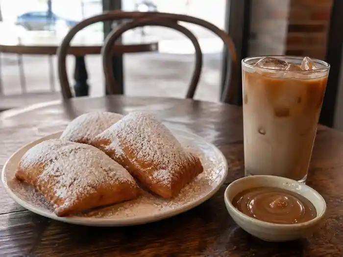
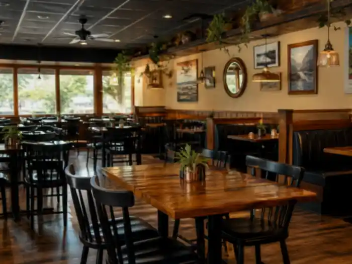
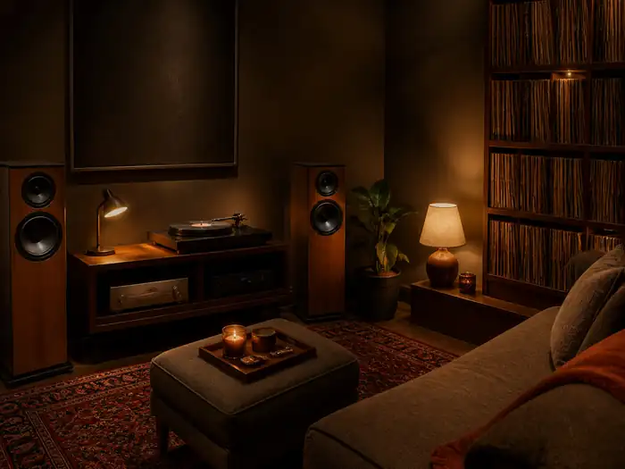
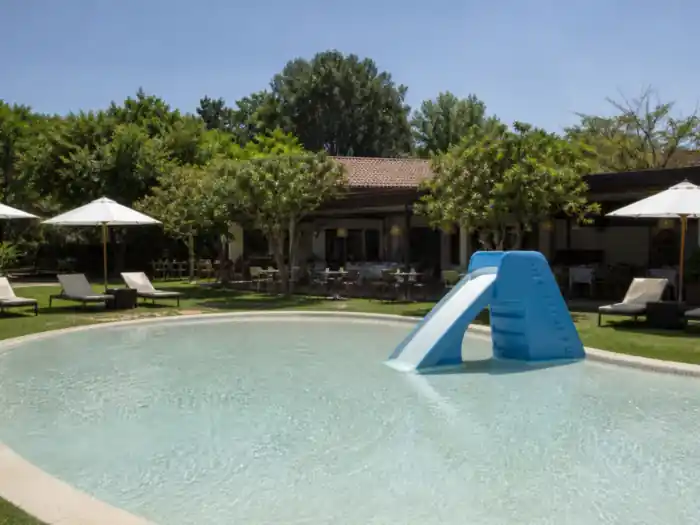
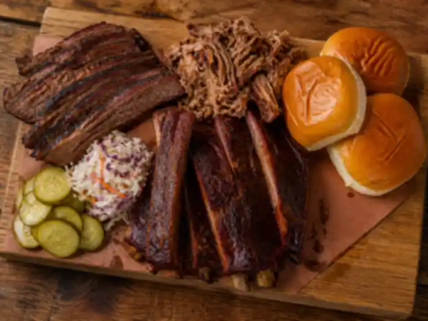
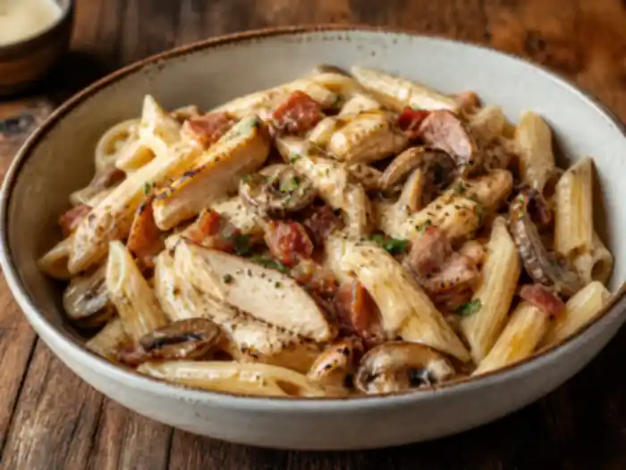

2인 SET
65,000브리스킷·풀드포크·베이비립 각 2인분, 모닝빵 2, 컵샐러드, 파스타 1택, 음료 1택, 풀드포크 나쵸, 코우슬로

YANGJU · HOECHEON · SINCE 2023
UN 한국대표부 셰프가 만든
미국식 패밀리 레스토랑
뉴올리언스의 바베큐와 베녜, 그리고 숲이 있는 테라스.
가족과 반려견이 함께 앉는 양주 회천의 저녁.
2023
년 5월, 회천의 숲 옆에 문을 열었습니다.
루이스타운은 UN 한국대표부 셰프가 만든 미국식 패밀리 레스토랑입니다. 뉴올리언스의 바베큐와 브런치를 중심으로, 미국 가정집의 액자와 식물, 모던한 가구를 그대로 옮겨 놓은 1층 다이닝에서 식사가 시작됩니다.
직접 훈연한 브리스킷과 풀드포크, 베이비립. 손으로 반죽해 튀겨 내는 뉴올리언스식 도넛 베녜. 커다란 창밖으로는 숲과 탁 트인 전경이 이어지고, 여름에는 야외 수영장이 열립니다.
THE SPACE

1F
미국 가정집의 액자와 식물, 모던한 가구. 단체석과 유아의자, 아기 식기가 준비되어 있어 가족 모임에 맞습니다.

2F
한 팀만 예약받는 2층 공간. 신청곡을 큰 소리로 듣는 프라이빗 청음으로 운영됩니다.

OUT
숲을 마주한 야외 테이블, 여름에는 아이들도 놀 수 있는 얕은 수영장과 미끄럼틀이 열립니다.
※ 수영장은 여름 시즌 한정 운영이며, 운영 기간과 입장료는 매장 확인이 필요합니다.
DOG FRIENDLY
야외 테라스는 반려견과 함께 이용할 수 있습니다. 눈치 보지 않고 식사할 수 있도록 자리를 따로 안내해 드립니다.
※ 실내 동반 가능 여부와 좌석 지정은 방문 전 전화로 확인해 주세요.
RESERVATION
인원과 목적에 따라 창구가 다릅니다. 1~20명은 네이버 예약, 그 외는 전화가 가장 빠릅니다.
GALLERY


※ 위 이미지는 분위기 구현용 예시 이미지이며 실제 매장 사진이 아닙니다. 실제 제작 시 매장 사진으로 교체합니다.
VISIT
경기 양주시 평화로1597번길 100 1층(회정동 479)
약도는 위치를 이해하기 위한 간략한 그림입니다. 정확한 길 안내는 지도 앱을 이용해 주세요.